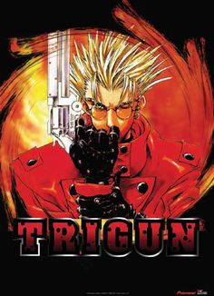

Trigun
Vash the Stampede, the most wanted outlaw around; known mainly for destroying entire towns. However, there is no evidence that he has taken any lives. The bounty hunters who pursue him often walk away hurt with Vash leaving without a scratch. Despite his reputation, Vash is really the non-violent type with a strange addiction to doughnuts.